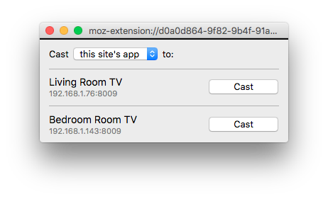
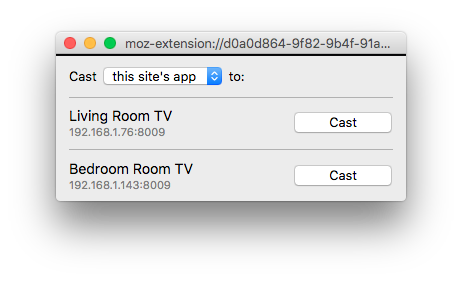

Enables Chromecast support for casting web apps (like Netflix, YouTube or BBC iPlayer), HTML5 video and screen/tab sharing.
Requires a native bridge app to connect with receiver devices. Currently supported on Windows, macOS and Linux.
No public full release yet!
 
